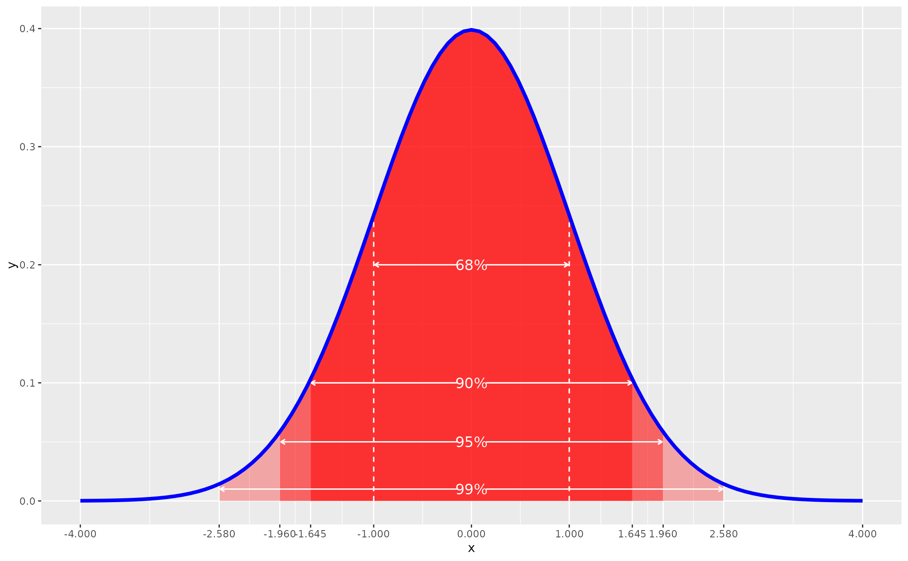
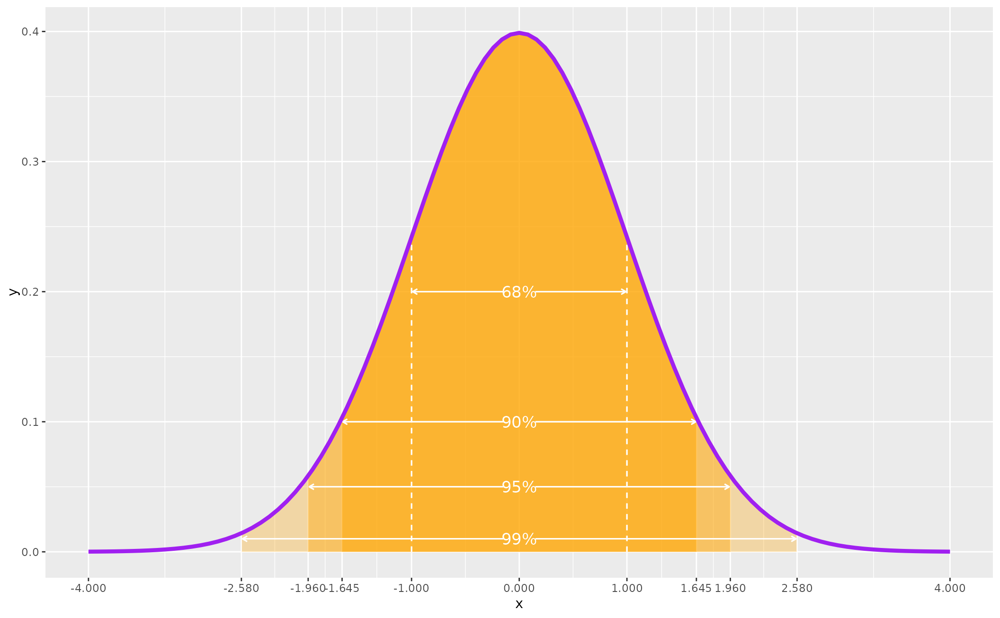

normal_dist() is a convenience function for making a plot of a normal distribution
with annotated areas underneath the normal curve.
Arguments
- curvecolor
What color should the curve itself be. Any ggplot2-recognized format should do here.
- fillcolor
What color should the area underneath the curve be. Any ggplot2-recognized format should do here.
- fontfamily
Font family for labeling areas underneath the curve. OPTIONAL. You can omit this if you'd like.
Value
The function returns a fancy plot of a normal distribution annotated with areas underneath the hood. Note that
whatever color is supplied in fillcolor is automatically lightened for areas further from the center of the curve.
Details
The normal distribution is a standard normal distribution with a mean of 0 and a standard deviation of 1.
Examples
library(stevemisc)
normal_dist("blue","red")

normal_dist("purple","orange")
